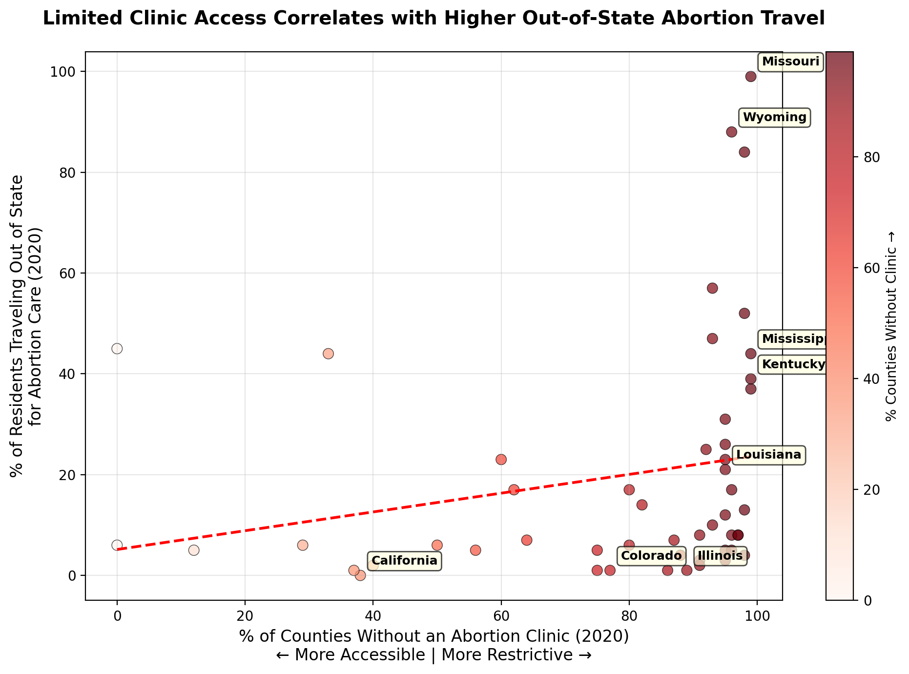

Proposition: "Restrictive abortion policies lead to lower abortion rates."
FOR the Proposition

Design Decisions and Rationale
-
Decision 1 – Variable Selection (Score: 2)
I paired “% of counties without a known clinic” with “% of residents traveling out of state for abortion care.” This transformation makes the argument persuasive by suggesting that clinic scarcity leads to fewer in-state abortions. It’s fully earnest because both variables are directly measurable and logically connected to the policy context. -
Decision 2 – Trend Line (Score: 1.5)
The dashed red trend line conveys a weak but visible positive correlation between limited access and higher out-of-state travel. It’s slightly persuasive because it visually amplifies the relationship, but remains ethical since the slope and fit are accurate and not exaggerated. -
Decision 3 – Color Encoding (Score: 1.5)
The monotone red palette links intensity to clinic scarcity, making the relationship visually intuitive. The warm hue evokes restriction and urgency, reinforcing the argument’s emotional tone. It’s mostly earnest, but carries mild persuasive bias through color psychology. -
Decision 4 – Selective Annotations (Score: 1)
Highlighting states such as Mississippi, Louisiana, California, and Colorado draws attention to ideological and geographic contrasts. This makes the visualization engaging and easier to interpret but introduces slight persuasion by spotlighting outliers that reinforce the narrative. -
Decision 5 – Neutral Framing (Score: 2)
The title and axis phrasing use neutral wording—“correlates” rather than “causes”—and describe restrictiveness along a spectrum (“More Accessible | More Restrictive”). This maintains credibility and readability, ensuring that viewers understand the chart’s limits while still framing it persuasively.
Data limitations: The data reflect only 2020, before major post-Dobbs policy changes. “% of counties without a clinic” is a coarse proxy that ignores capacity, telehealth access, and within-state disparities. State-level aggregation hides urban–rural variation and border-county dynamics.
Potential confounders (to assess robustness): Neighbor state policies and travel distances; income, insurance, and Medicaid coverage; population density and clinic capacity; gestational limits and wait times; and availability of nonprofit or telehealth support networks.
AGAINST the Proposition
Design Decisions and Rationale:
- RATIONALE_1
- RATIONALE_2
- RATIONALE_3
Final Reflection
first paragraph
After completing this project, we define ethical analysis and visualization as being honest and making design choices that don’t misrepresent the dataset. Visualizations can be easily manipulated to create a false narrative and deceive the audience. Every design choice requires careful consideration about how the visualization will be interpreted. In this project, we used deceptive techniques to persuade both sides of the proposition, which helped us understand how easy it is to create unethical visualizations. Overall, ethical analysis and visualization means presenting the data in a responsible way that doesn’t mislead the audience.
From our perspective, the bounds between “acceptable” persuasive choices and “misleading” ones is the manipulation of the data and the intent behind design choices. Acceptable persuasive choices involve data transformations or design choices that don’t misrepresent the data. Misleading persuasive choices involve omitting or altering certain data that changes the audience’s takeaway from the visualization. Each design choice can have a significant effect on what is being perceived. The line between acceptable and misleading may be unclear, but it ultimately comes down to the intent and utilization of the dataset.